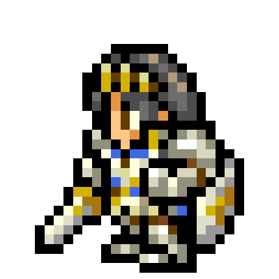
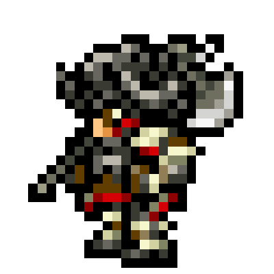

暑さも、寒さも。
今日はどんなエオルゼア？
気象庁の観測値から、いまの空気に似合う景色を選びます。
観測データを読み込んでいます。
気温・湿度・風・雨を確認中…


© SQUARE ENIX
位置情報は端末内だけで使います
緯度・経度は保存せず、最寄りの観測地点を選ぶ処理にだけ使います。端末に保存するのは観測地点IDです。次回はその地点を開くため、移動したときは「現在地を更新」を押してください。
気になる街を、旅の仲間に。
最大4地点を、この端末に保存して比較できます。
自宅や旅先を保存すると、最新の観測値を並べて表示します。
旅立つ前に、空の便りを。FFXIV FAN KIT © SQUARE ENIX
台風・熱帯低気圧
気象庁の発表を、そのまま確認。
最新の台風情報を確認しています。
気象庁の進路図・暴風域を見るここに掲載される台風が、現在地に接近しているとは限りません。地域への影響は公式の進路図や警報・注意報で確認してください。
季節を越えて、冒険の先へ。FFXIV FAN KIT © SQUARE ENIX
気温で旅する
冬の冷気から、真夏の熱気まで。
−30℃0℃20℃45℃
気温とFF14の対応について
実際の観測気温で景色を選びます。氷点下から30.9℃までは地域や氷神シヴァ、31℃以上は炎を扱うキャラクターを0.5℃刻みで表示。41℃以上はゲロルトの特別枠です。気温の境界や表現は本サイトの創作で、FF14に公式の摂氏設定があるという意味ではありません。
湿度・風・雨・積雪は観測値として別に表示します。降水がないだけで「晴れ」、積雪があるだけで「雪が降っている」とは判定しません。
離れた土地にも、同じ空。FFXIV FAN KIT © SQUARE ENIX
日本のどこかの、いま
同じ観測時刻でも、空気はいろいろ。
まだ見ぬ土地の、今日を知る。FFXIV FAN KIT © SQUARE ENIX
全国の観測ランキング
観測時刻を確認中